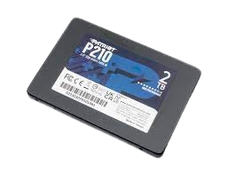

SSD (Solid state drive)
SSD คืออะไร
SSD หรือโซลิดสเตทไดรฟ์เป็นอุปกรณ์จัดเก็บข้อมูลประเภทหนึ่งที่ใช้ในคอมพิวเตอร์ สื่อจัดเก็บข้อมูลแบบไม่ลบเลือนนี้จัดเก็บข้อมูลถาวรไว้ในหน่วยความจำแฟลชโซลิดสเตต SSD เข้ามาแทนที่ฮาร์ดดิสก์ไดรฟ์ (HDD) แบบเดิมในคอมพิวเตอร์และทำหน้าที่พื้นฐานเหมือนกับฮาร์ดไดรฟ์ แต่ SSD นั้นเร็วกว่ามากเมื่อเปรียบเทียบ ด้วย SSD ระบบปฏิบัติการของอุปกรณ์จะบูตเร็วขึ้น โปรแกรมจะโหลดเร็วขึ้น และสามารถบันทึกไฟล์ได้เร็วขึ้น ฮาร์ดไดรฟ์แบบเดิมประกอบด้วยดิสก์แบบหมุนได้ซึ่งมีหัวอ่าน/เขียนบนแขนกลที่เรียกว่าแอคชูเอเตอร์ HDD อ่านและเขียนข้อมูลด้วยแม่เหล็ก อย่างไรก็ตาม คุณสมบัติของแม่เหล็กสามารถนำไปสู่การพังทลายทางกลได้ เมื่อเปรียบเทียบกันแล้ว SSD ไม่มีชิ้นส่วนที่เคลื่อนไหวให้หักหรือหมุนขึ้นหรือลงได้ องค์ประกอบหลักสองประการใน SSD คือตัวควบคุมแฟลชและชิปหน่วยความจำแฟลช NAND การกำหนดค่านี้ได้รับการปรับให้เหมาะสมเพื่อให้ประสิทธิภาพการอ่าน/เขียนสูงสำหรับการร้องขอข้อมูลตามลำดับและแบบสุ่ม
ssd (Solid state drive) มีหน้าที่ทำอะไร
SSD จัดเก็บข้อมูลอย่างถาวรภายในวงจรรวม โดยทั่วไปจะใช้หน่วยความจำแฟลช หน่วยความจำแฟลชภายใน SSD หมายถึงข้อมูลถูกเขียน ถ่ายโอน
และลบข้อมูลด้วยระบบอิเล็กทรอนิกส์และไร้เสียง — SSD ไม่มีชิ้นส่วนที่เคลื่อนไหวอยู่ภายในฮาร์ดดิสก์ไดรฟ์ (HDD) แบบกลไก
ประวัติของ SSD (Solid state drive)
SSD รุ่นแรกๆ ที่ใช้ RAM และเทคโนโลยีที่คล้ายกัน โซลิดสเตตไดรฟ์ (SSD) มีต้นกำเนิดในทศวรรษ 1950 โดยมีเทคโนโลยีสองอย่างที่คล้ายคลึงกัน ได้แก่ หน่วยความจำแกนแม่เหล็ก และการ์ดเก็บประจุแบบอ่านอย่างเดียว (CCROS) หน่วยหน่วยความจำเสริมเหล่านี้ (ตามที่คนรุ่นเดียวกันเรียกกัน) เกิดขึ้นในยุคของคอมพิวเตอร์หลอดสุญญากาศ แต่ด้วยการเปิดตัวหน่วยจัดเก็บแบบดรัมราคาถูก การใช้งานก็หยุดลง ต่อมาในคริสต์ทศวรรษ 1970 และ 1980 SSD ถูกนำมาใช้ในหน่วยความจำเซมิคอนดักเตอร์สำหรับซูเปอร์คอมพิวเตอร์ IBM, Amdahl และ Cray ในยุคแรกๆ แต่ไม่ค่อยมีใครได้ใช้เนื่องจากมีราคาสูงจนเกินไป ในช่วงปลายทศวรรษ 1970 General Instruments ได้ผลิต ROM ที่ปรับเปลี่ยนได้ด้วยระบบไฟฟ้า (EAROM) ซึ่งทำงานคล้ายกับหน่วยความจำแฟลช NAND รุ่นต่อมา น่าเสียดายที่ชีวิตสิบปีนั้นไม่สามารถทำได้ และหลายบริษัทก็ละทิ้งเทคโนโลยีนี้ ในปี 1976 Dataram เริ่มจำหน่ายผลิตภัณฑ์ชื่อ Bulk Core ซึ่งให้พื้นที่จัดเก็บข้อมูลโซลิดสเตตสูงสุด 2 MB ที่เข้ากันได้กับคอมพิวเตอร์ Digital Equipment Corporation (DEC) และ Data General (DG) ในปี 1978 Texas Memory Systems ได้เปิดตัวไดรฟ์โซลิดสเตต RAM ขนาด 16 กิโลไบต์ที่บริษัทน้ำมันใช้ในการเก็บข้อมูลแผ่นดินไหว ในปีต่อมา StorageTek ได้พัฒนาไดรฟ์โซลิดสเทต RAM ตัวแรก Sharp PC-5000 เปิดตัวในปี 1983 ใช้คาร์ทริดจ์จัดเก็บข้อมูลโซลิดสเตตขนาด 128 KB ที่มีหน่วยความจำแบบฟอง ในปี 1984 Tallgrass Technologies Corporation มีหน่วยเทปสำรองข้อมูลขนาด 40 เมกะไบต์ พร้อมด้วยหน่วยโซลิดสเตตขนาด 20 MB ในตัว หน่วยขนาด 20 MB สามารถใช้แทนฮาร์ดไดรฟ์ได้ ในเดือนกันยายน พ.ศ. 2529 Santa Clara Systems ได้เปิดตัว BatRam ซึ่งเป็นระบบจัดเก็บข้อมูลขนาดใหญ่ 4 MB ซึ่งสามารถขยายได้ถึง 20 MB โดยใช้โมดูลหน่วยความจำ 4 MB แพคเกจนี้รวมแบตเตอรี่แบบชาร์จไฟได้เพื่อรักษาเนื้อหาชิปหน่วยความจำเมื่อไม่ได้จ่ายไฟอาเรย์ ในปี 1987 บริษัท EMC Corporation (EMC) เข้าสู่ตลาด SSD โดยมีการเปิดตัวไดรฟ์สำหรับตลาดมินิคอมพิวเตอร์ อย่างไรก็ตาม ภายในปี 1993 EMC ก็ออกจากตลาด SSD แล้ว ในปี 2009 ดิสก์ RAM ที่ใช้ซอฟต์แวร์ยังคงใช้อยู่ เนื่องจากมีขนาดที่เร็วกว่าเทคโนโลยีอื่นๆ แม้ว่าดิสก์เหล่านั้นจะใช้ทรัพยากร CPU มากกว่าและมีราคาต่อกิกะไบต์สูงกว่ามากก็ตาม
=